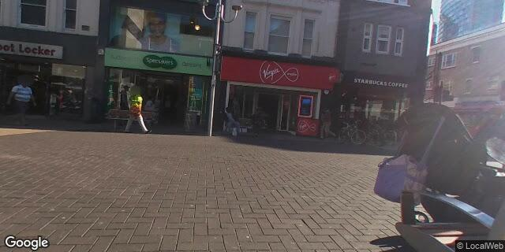

| Muslim population | 31.3% |
|---|---|
| District population | 310,260 |
| Daily footfall (est.) | 52,000 |
| Daytime workers | 42,000 |
| Student catchment | 15,000 |
| Median HH income | £47,000 |
| Transit | Adjacent ✓ |
| Local authority | Redbridge |
Nearest direct competitor: Caffè Nero High Road Ilford (~50m, opposite, chain coffee); Greggs High Road (~80m, chain bakery); Costa Coffee Exchange Ilford (~150m, chain coffee); Pret A Manger Ilford Station (~200m, chain coffee); Starbucks Exchange Ilford (~180m, chain coffee); Subway High Road (~100m, chain QSR); Marks & Spencer High Road (~80m, opposite, anchor); Boots High Road (~100m, anchor); Sainsbury's High Road (~150m, anchor); JD Sports 177-185 High Road (~200m, anchor); The Exchange Ilford shopping centre (~100m, 300,000 sqft regional); Ilford Lane halal-restaurant-spine (Mughal Tandoori / Mems / Aladin / Lahore Kebab Ilford / Hawelli, ~600-1,000m south, indie halal cluster); No direct premium-specialty (% Arabica / Blank Street / Black Sheep / Gail's closest at 4.0km+ Stratford); No direct Yemeni or Middle Eastern coffee operator inside IG1 (50m)
Ilford High Road A118 prime-pitch chain-coffee saturation (Caffè Nero 50m + Greggs 80m + Subway 100m + Costa 150m + Starbucks 180m + Pret 200m) at £3-6 pricepoint anchored by M&S/Boots/Sainsbury's/JD Sports/Exchange Ilford 100m + Ilford Station Elizabeth Line walk-up — meaningful Yemeni-heritage premium-specialty whitespace at the £4-7 pricepoint with NO direct premium-specialty (Gail's/Blank Street/% Arabica) inside IG1 = first-mover advantage; central-Satellite c.1,200 sqft enables 40-60 cover all-day-hospitality positioning + Yemeni-heritage + traditional-brew + dallah-pour + family-friendly + alcohol-free + Allaina-serif + qamariya treatment + Tier-1-Crossrail-pitch positioning is highest hospitality > transaction differentiator on Ilford High Road prime-pitch.
Phone LoopNet 9510815 listing-agent (109 High Road Ilford IG1 1DE per loopnet.com/Listing/109-High-Rd-Ilford/9510815 — pre-LOI listing-agent identification + Redbridge Council planning database + Ilford 2030 Town Centre Masterplan engagement) within 48h to request (a) full marketing pack with exact GIA / NIA + frontage width + ceiling height + EPC + use class confirmation + landlord covenant + lease term + Cat-A or fitted-spec + Schedule-of-Condition + listing-status-current vs. let confirmation; (b) headline rent + service charge + rates + RV + premium / incentives + Cat-B contribution + step-rent / turnover-rent structure + Redbridge Council Ilford 2030 Town Centre Masterplan engagement + outdoor-seating consent precedent + High Road A118 highways / pavement-seating case-law + Crossrail-driven Section-106 contributions; (c) listing-agent wider Ilford High Road + Cranbrook Road + Exchange Ilford fringe + Ilford Lane commercial pipeline + landlord motivation level + 109 High Road void duration + prior-tenant vacate reason + cross-reference 177-185 High Road JD Sports anchor + Exchange Ilford institutional-scheme + Cranbrook Road TFK 78-80 same-batch IG1 instructions. Walk High Road from Ilford Station Elizabeth Line via 109 Mon-Fri 07:00-09:00 + 12:00-14:00 + 17:00-21:00 + Sat 09:00-20:00 + Sun 10:00-19:00 to benchmark Crossrail commuter-rush + M&S/Boots/Sainsbury's/JD Sports/Exchange Ilford anchor-cross-shopping + Caffè Nero/Greggs/Costa/Starbucks/Pret/Subway chain-coffee-and-QSR competitor capture + Ilford Lane halal-spine south-corridor catchment-overlap vs. Yemeni-heritage opportunity-set + central-Satellite scale + Tier-1-Crossrail-pitch visibility-premium.